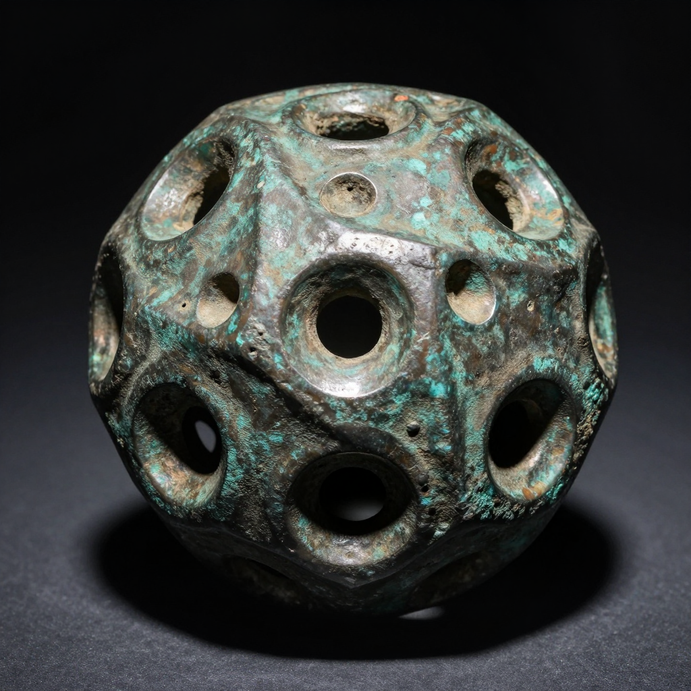
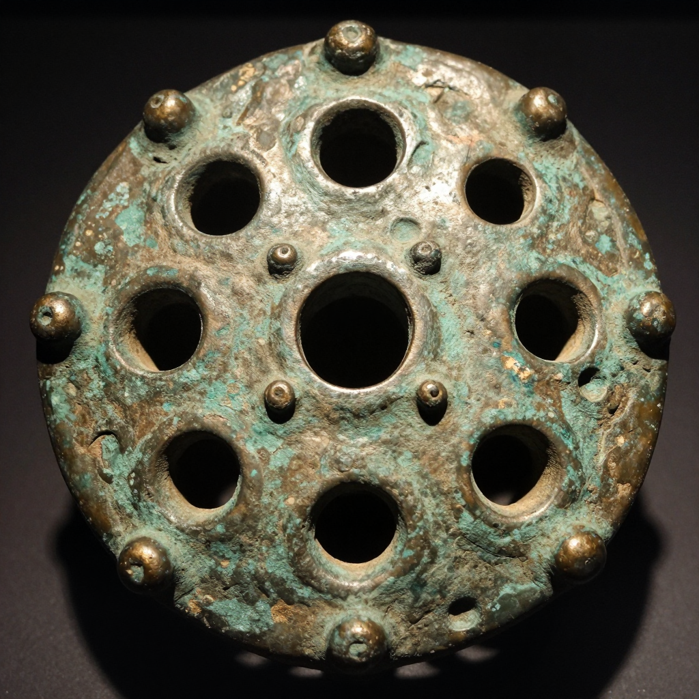
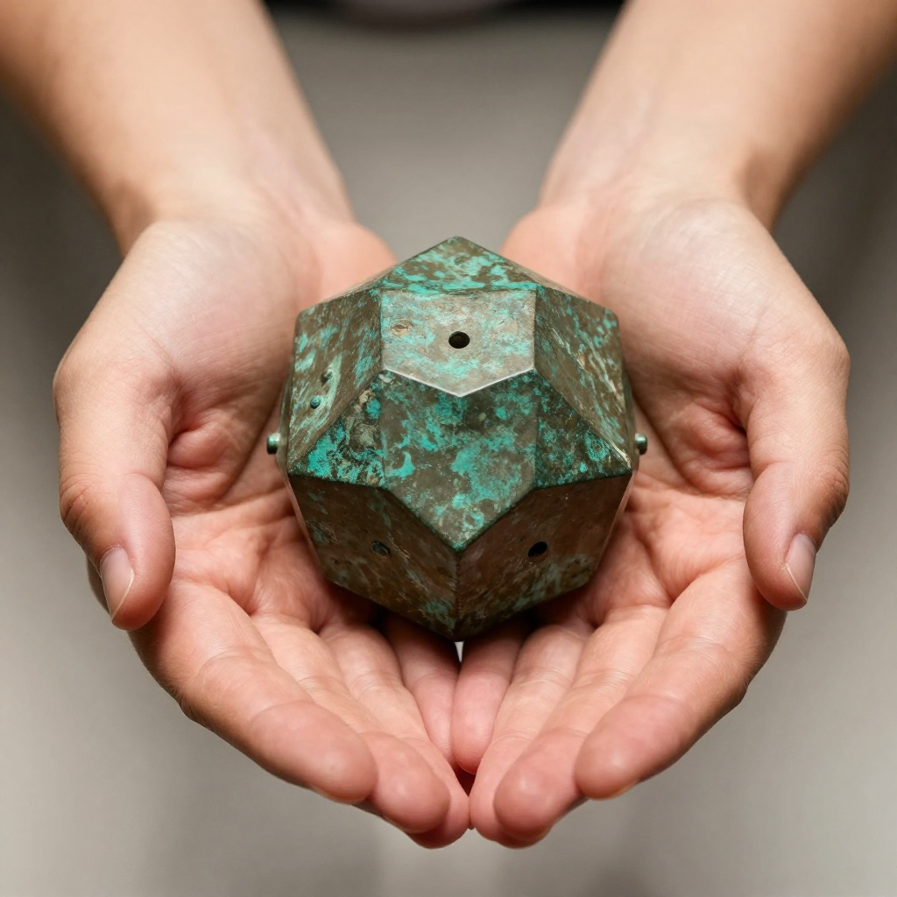

The Roman Dodecahedron: Ancient Mystery That Still Baffles Experts

One of over 130 mysterious dodecahedrons found across Europe. What was its purpose?
Imagine finding a strange 12-sided bronze object with circular holes of different sizes on each face. Now imagine finding over 130 of them scattered across the Roman Empire, from England to Hungary - and having absolutely no idea what they were used for. Welcome to one of archaeology's greatest unsolved puzzles.
What Are These Strange Objects?
Roman dodecahedrons are hollow, 12-sided geometric shapes made of copper alloy (bronze). Each face is a pentagon with a circular hole in the center, and each hole is a different size. The corners are decorated with small knobs or spheres. They typically measure between 4 and 11 centimeters across - roughly the size of a tennis ball to a grapefruit.

The intricate design features different-sized holes and corner knobs, all crafted with remarkable precision.
🕐 First Discovery in 1739
The first dodecahedron was unearthed in Aston, Hertfordshire, England in 1739. Nearly 300 years later, we still don't know what they were for!
Where Have They Been Found?
These mysterious objects have been discovered throughout the northwestern provinces of the Roman Empire. England has yielded 33 dodecahedrons, while others have been found in France, Germany, Belgium, Netherlands, Switzerland, Austria, and Hungary. Interestingly, none have ever been found in Italy or other Mediterranean regions of the Roman Empire.
📍 A Regional Mystery
All dodecahedrons have been found in Roman Britain and Gaul (modern France and surrounding areas) - never in Rome itself or the eastern empire!

Most dodecahedrons fit comfortably in your hand, suggesting they were meant to be portable tools or devices.
Theories and Speculations
Archaeologists and historians have proposed dozens of theories over the centuries, but none has been definitively proven:
Astronomical calculators: Some believe the different-sized holes could be used to calculate sun positions or track seasons for farming.
Religious or magical objects: The elaborate design and regional distribution suggest possible ritual significance.
Military devices: Could they have been used for ranging distances or calibrating artillery?
Textile tools: Perhaps they helped create intricate knotted patterns or measure yarn.
❓ No Written Records
Despite the Romans being excellent record-keepers, no ancient text, inscription, or image has ever mentioned or depicted a dodecahedron!
Why Can't We Solve This Mystery?
Part of the challenge is that dodecahedrons weren't found in obvious contexts like temples, workshops, or graves. Many were discovered by metal detectorists in fields, making it hard to understand their original purpose. Additionally, they date from the 2nd to 4th centuries CE, a period from which fewer written records survive.
🔬 Latest Discovery in 2024
A perfectly preserved dodecahedron was found in Norton Disney, England in summer 2023 and made headlines in 2024. It's one of the best examples ever discovered!
The Roman dodecahedron remains one of those wonderful historical mysteries that reminds us how much we still have to learn about the past. Perhaps one day, a lucky discovery will finally reveal their true purpose - until then, they continue to captivate our imagination.
Clear Summary of the Evidence
The Roman Dodecahedron: Ancient Mystery That Still Baffles Experts can sound dramatic, but the best way to understand it is to separate strong evidence from speculation. This article focuses on documented facts, source quality, and clear historical context.
In simple terms, this topic matters because it connects three ideas: what happened, how we know, and what remains uncertain. The core story in The Roman Dodecahedron: Ancient Mystery That Still Baffles Experts is easier to follow when we use a timeline, define key terms, and point directly to sources.
One of over 130 mysterious dodecahedrons found across Europe. What was its purpose?
Background Timeline (What Happened, Step by Step)
- The first dodecahedron was unearthed in Aston, Hertfordshire, England in 1739.
- A perfectly preserved dodecahedron was found in Norton Disney, England in summer 2023 and made headlines in 2024.
- Experts continue revisiting The Roman Dodecahedron: Ancient Mystery That Still Baffles Experts as better tools and stronger source checks become available.
- Experts continue revisiting The Roman Dodecahedron: Ancient Mystery That Still Baffles Experts as better tools and stronger source checks become available.
- Experts continue revisiting The Roman Dodecahedron: Ancient Mystery That Still Baffles Experts as better tools and stronger source checks become available.
This timeline view clarifies the sequence of events and helps test whether later claims fit documented records.
What We Know with Strong Support
Across discussions of The Roman Dodecahedron: Ancient Mystery That Still Baffles Experts, several points are consistently supported by records or repeatable analysis:
- Imagine finding a strange 12-sided bronze object with circular holes of different sizes on each face.
- Now imagine finding over 130 of them scattered across the Roman Empire, from England to Hungary - and having absolutely no idea what they were used for.
- Roman dodecahedrons are hollow, 12-sided geometric shapes made of copper alloy (bronze).
- Each face is a pentagon with a circular hole in the center, and each hole is a different size.
These claims are stronger because they can be checked independently, rather than depending on one dramatic story or one unverified source.
How Researchers Study This Topic
Good history is a method, not just a story. When experts examine The Roman Dodecahedron: Ancient Mystery That Still Baffles Experts, they usually combine source criticism, technical analysis, and contextual comparison.
- Archaeologists compare excavation reports, layer dates, and artifact context rather than relying on isolated objects.
- Museum catalogs and conservation notes help separate original features from later restoration changes.
- Scholars test competing interpretations against material evidence, inscriptions, and parallel finds from nearby sites.
Strong analysis starts by checking whether a claim is supported by verifiable evidence and independent review.
What Experts Still Debate
Even with good evidence, not every question has a final answer. In The Roman Dodecahedron: Ancient Mystery That Still Baffles Experts, debates often continue because the surviving data is incomplete, damaged, or interpreted in different ways.
One common source of confusion is mixing the topics of What Are These Strange Objects?, Where Have They Been Found?, and Theories and Speculations as if they prove the same thing. In reality, each part of the story may require different standards of proof.
A balanced approach is to keep uncertainty visible: we can confidently state what records show today, while leaving room for future evidence to update the picture.
Myths vs. Evidence
Myth: If a topic is mysterious, experts have no idea what happened.
Evidence-based view: Usually, experts know many parts of the story; the debate is about specific details.
Myth: The most dramatic explanation is probably true.
Evidence-based view: The best explanation is the one that matches the most verifiable facts with the fewest assumptions.
Myth: New claims automatically replace old research.
Evidence-based view: New claims become accepted only after careful checks, replication, and critical review.
Why This Story Still Matters Today
The Roman Dodecahedron: Ancient Mystery That Still Baffles Experts is not only a curiosity from the past. It also provides a well-documented case for comparing primary records, later interpretations, and unresolved evidence questions.
This matters because careful source-checking reduces misinformation and keeps historical interpretation anchored to evidence.
Mini Glossary (Plain Language)
- Primary source: A record made close to the event, like a report, letter, inscription, or official document.
- Secondary source: A later explanation that interprets primary evidence.
- Hypothesis: A proposed explanation that must be tested against evidence.
- Consensus: The view most experts currently support, knowing it can change with new data.
- Context layer: The archaeological layer where an object is found, which helps date and interpret it.
- Provenance: The known history of where an artifact came from and who handled it over time.
Quick Recap
If you remember only three things about The Roman Dodecahedron: Ancient Mystery That Still Baffles Experts, keep these: (1) there is real evidence worth studying, (2) some questions remain open, and (3) careful source-checking is the best path to reliable understanding.
That balance of curiosity and caution helps separate durable historical findings from speculation.
Extended Context for Deeper Reading
When we revisit The Roman Dodecahedron: Ancient Mystery That Still Baffles Experts with patience, the most useful progress comes from careful comparison: early reports versus later analysis, confident claims versus documented limits, and popular retellings versus primary evidence. This method yields a clearer map of established findings and unresolved questions.
Additional context: research on this topic changes as new documents, field surveys, and technical methods become available. Current evidence supports the central narrative presented here, but finer points such as dating precision, attribution details, and event reconstruction can shift when stronger datasets appear. This is why historical writing compares primary records, cross-checks later interpretations, and updates claims when new peer-reviewed findings are published.
References & Further Reading
Editorial note: We cross-check claims across multiple independent sources. See our Editorial Policy.